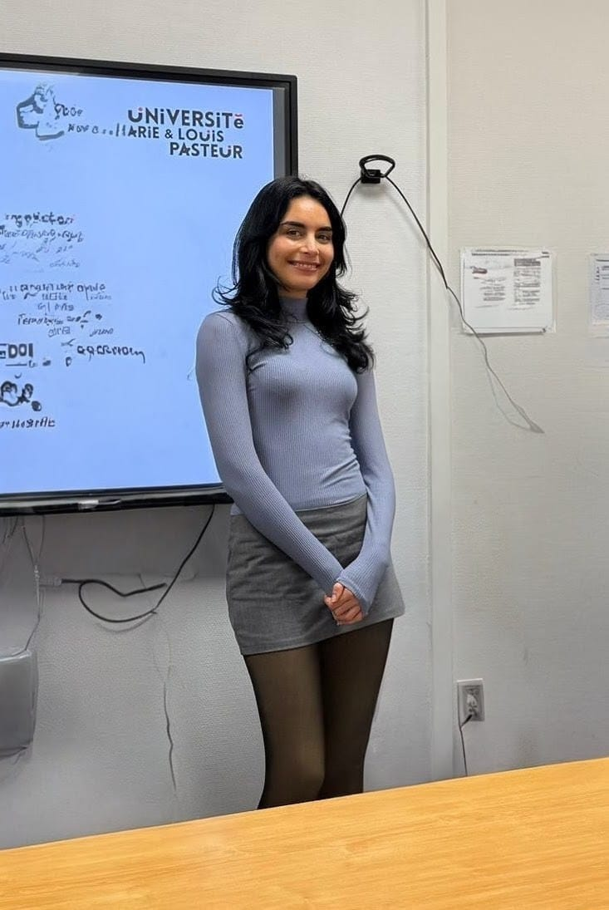

MSc Business Intelligence student specializing in Behavioral Economics and Automation. Bridging the gap between raw data and premium business performance.

M2 Student
BDEEM Specialization
I operate at the intersection of Behavioral Economics and Data Intelligence. My work focuses on understanding the "why" behind consumer decisions and building the "how" through automated systems.
Whether it's deploying NLP bots on Hugging Face or architecting cloud workflows in Azure, I transform raw data into a competitive advantage for premium global brands.
Econometric analysis using Segmented Regression and GAM models to identify financial saturation points in global happiness.
Real-time monitoring solution designed to track market fluctuations and regulatory changes.
Launch Bot →Advanced retrieval system leveraging NLP to extract insights from unstructured datasets.
Run Analysis →Cloud-native newsletter workflow architected via JSON templates in the Azure Portal.
View Architecture →Garance Formation
Garance Formation